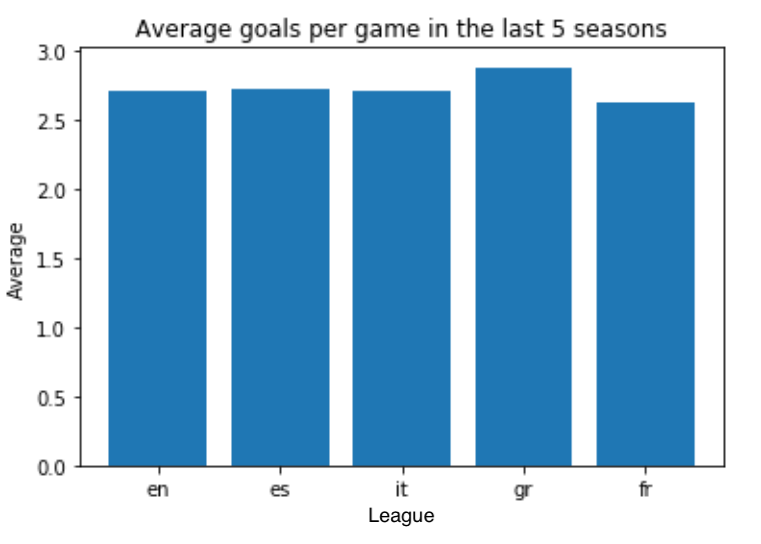

Big Data Analysis with PySpark on OMRON connect data
Apr 2021 ~ Internship at OMRON Healthcare Europe
Length: 1mo (at 1.0 FTE)
Programming languages:
- Python (PySpark, datetime, NumPy, collections,
Pandas, Matplotlib, seaborn)
- SQL
Data: Over 4 million blood pressure measurements registered via OMRON connect by
approximately 35 000 users, including the systolic, diastolic, and pulse of each measurement,
the time and date, the device used, as well as some extra features the device sensors assessed, such
as whether the cuff wrap was set properly or if it was too loose
Problem description:
Analyze data to gather insights about the OMRON devices, the OMRON connect app, and its
users' blood pressure
Approach & Results:
After the data was read as a PySpark dataframe, it was explored by counting the number of
records, displaying the available features, their types, the number of missing values and
the distinct values in the most important columns. Next, a number of additional variables
were extracted from the device, for instance the device type (upper arm/ wrist) and its
measuring technique (inflation/ deflation). Another extra feature derived is suggesting the
success of each measurement depending on the signals registered by the sensors of each device.
For example, if the device assessed the cuff wrap as too loose, the measure was declared
unsuccessful.
